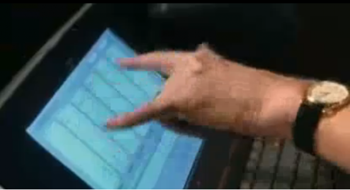

From Scissors to Shipping Code

Bowie's Cut-Up Method, 1973

"And then I'll set it to Randomize."
Verbasizer, 1995
1920s
Physical cut-up method with scissors
1995
Verbasizer 2.0 digital randomization
2019
AI Dungeon interactive text generation
2022
ChatGPT browser-based prompting
2024
Tools/MCP servers provide filesystem access
2025
Agentic coding assistants with full workflow automation